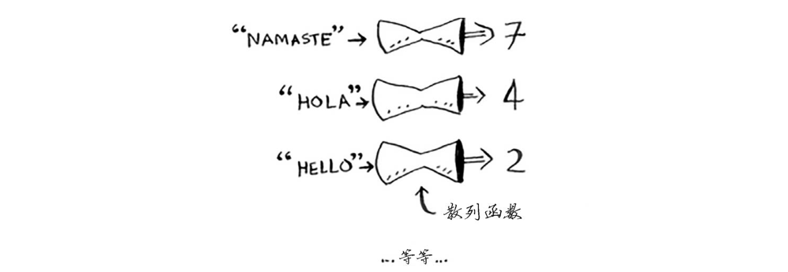
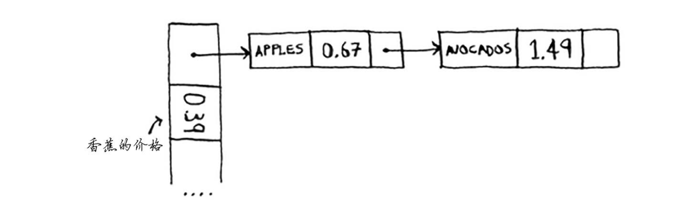
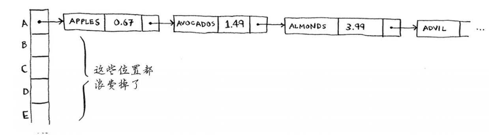
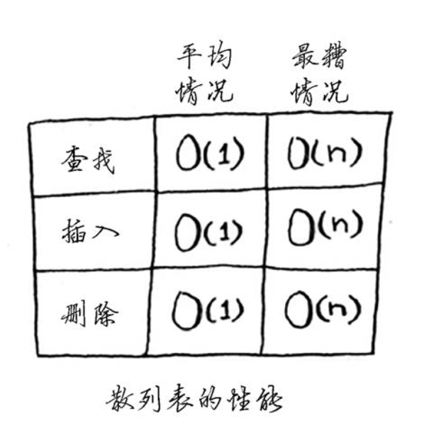
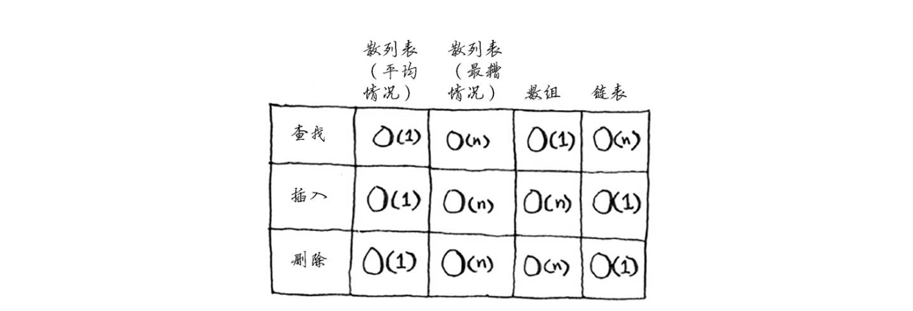

《算法图解》学习
《算法图解》学习之五：散列表
5. 散列表
前面介绍了两种数据结构:数组和链表(其实还有栈，但栈
并不能用于查找)。
5.1. 散列函数
散列函数是这样的函数，即无论你给它什么数据，它都还你一个数字。

如果用专业术语来表达的话，我们会说，散列函数“将输入映射到数字”。你可能认为散列函数输出的数字没什么规律，但其实散列函数必须满足一些要求。
- 它必须是一致的。例如，假设你输入 apple 时得到的是 4，那么每次输入 apple 时，得到的都必须为 4。如果不是这样，散列表将毫无用处。
- 它应将不同的输入映射到不同的数字。例如，如果一个散列函数不管输入是什么都返回 1，它就不是好的散列函数。最理想的情况是，将不同的输入映射到不同的数字。
散列函数的一些性质：
- 散列函数总是将同样的输入映射到相同的索引。
- 散列函数将不同的输入映射到不同的索引。
- 散列函数知道数组有多大，只返回有效的索引。如果数组包含 5 个元素，散列函数就不会 返回无效索引 100。
在你将学习的复杂数据结构中，散列表可能是最有用的，也被称为散列映射、映射、字典和关联数组。散列表的速度很快!还记得第 2 章关于数组和链表的讨论吗?你可以立即获取数组中的元素，而散列表也使用数组来存储数据，因此其获取元素的速度与数组一样快。
你可能根本不需要自己去实现散列表，任一优秀的语言都提供了散列表实现。Python 提供的散列表实现为字典，你可使用函数 dict 来创建散列表。
book = dict() # 可用 book = {} 代替
创建散列表 book 后，在其中添加一些商品的价格。
book = dict() # 可用 book = {} 代替 book["apple"] = 0.67 book["milk"] = 1.49 book["avocado"] = 1.49 print(book)
运行结果：
{'apple': 0.67, 'milk': 1.49, 'avocado': 1.49}
散列表由键和值组成。在前面的散列表 book 中，键为商品名，值为商品价格。散列表将键映射到值。
5.2. 应用案例
5.2.1. 将散列表用于查找
在下述情况下，使用散列表是很不错的选择：
- 创建映射。
- 查找。
更多内容详见书籍。
5.2.2. 防止重复
使用散列表来检查是否重复，速度非常快。
更多内容详见书籍。
5.2.3.将散列表用作缓存
更多内容详见书籍。
5.2.4. 小结
这里总结一下，散列表适合用于:
- 模拟映射关系;
- 防止重复;
- 缓存/记住数据，以免服务器再通过处理来生成它们。
5.3. 冲突
前面说过，大多数语言都提供了散列表实现，你不用知道如何实现它们。有鉴于此，我就不再过多地讨论散列表的内部原理，但你依然需要考虑性能!要明白散列表的性能，你得先搞清楚什么是冲突。本节和下一节将分别介绍冲突和性能。
首先，我撒了一个善意的谎。我之前告诉你的是，散列函数总是将不同的键映射到数组的不同位置。
实际上，几乎不可能编写出这样的散列函数。
冲突(collision):给两 个键分配的位置相同。
处理冲突的方式 很多，最简单的办法如下:如果两个键映射到了同一个位置，就在这个位置存储一个链表。

在这个例子中，apple 和 avocado 映射到了同一个位置，因此在这个位置存储一个链表。在需要查询香蕉的价格时，速度依然很快。但在需要查询苹果的价格时，速度要慢些:你必须在相应的链表中找到 apple。如果这个链表很短，也没什么大不了——只需搜索三四个元素。但是，假设你工作的杂货店只销售名称以字母 A 打头的商品。

等等!除第一个位置外，整个散列表都是空的，而第一个位置包含一个很长的列表!换言之，这个散列表中的所有元素都在这个链表中，这与一开始就将所有元素存储到一个链表中一样糟糕:散列表的速度会很慢。
这里的经验教训有两个。
- 散列函数很重要。 前面的散列函数将所有的键都映射到一个位置，而最理想的情况是，散列函数将键均匀地映射到散列表的不同位置。
- 如果散列表存储的链表很长，散列表的速度将急剧下降。 然而，如果使用的散列函数很好，这些链表就不会很长!
散列函数很重要，好的散列函数很少导致冲突。那么，如何选择好的散列函数呢?这将在下一节介绍!
5.4.性能

在平均情况下，散列表执行各种操作的时间都为 。 被称为常量时间。你以前没有见过常量时间，它并不意味着马上，而是说不管散列表多大，所需的时间都相同。例如，你知道的，简单查找的运行时间为线性时间。

二分查找的速度更快，所需时间为对数时间。
在散列表中查找所花费的时间为常量时间。
一条水平线，看到了吧?这意味着无论散列表包含一个元素还是 10 亿个元素，从其中获取数据所需的时间都相同。实际上，你以前见过常量时间——从数组中获取一个元素所需的时间就是固定的:不管数组多大，从中获取一个元素所需的时间都是相同的。在平均情况下，散列表的速度确实很快。
在最糟情况下，散列表所有操作的运行时间都为 ——线性时间，这真的很慢。我们来将散列表同数组和链表比较一下。

在平均情况下，散列表的查找(获取给定索引处的值)速度与数组一样快，而插入和删除速度与链表一样快，因此它兼具两者的优点!但在最糟情况下，散列表的各种操作的速度都很慢。 因此，在使用散列表时，避开最糟情况至关重要。为此，需要避免冲突。而要避免冲突，需要有:
- 较低的填装因子;
- 良好的散列函数。
说明
接下来的内容并非必读的，我将讨论如何实现散列表，但你根本就不需要这样做。不管你使用的是哪种编程语言，其中都内置了散列表实现。你可使用内置的散列表，并假定其性 能良好。下面带你去看看幕后的情况。
5.4.1. 填装因子
散列表的填装因子很容易计算。
填装因子度量的是散列表中有多少位置是空的。
不可能让每种商品都有自己的位置，因为没有足够的位置!填装因子大于 1 意味着商品数量超过了数组的位置数。一旦填装因子开始增大，你就需要在散列表中添加位置，这被称为调整长度(resizing)。
填装因子越低，发生冲突的可能性越小，散列表的性能越高。一个不错的经验规则是:一旦填装因子大于 0.7，就调整散列表的长度。
你可能在想，调整散列表长度的工作需要很长时间!你说得没错，调整长度的开销很大，因此你不会希望频繁地这样做。但平均而言，即便考虑到调整长度所需的时间，散列表操作所需的时间也为 。
5.4.2. 良好的散列函数
良好的散列函数让数组中的值呈均匀分布。糟糕的散列函数让值扎堆，导致大量的冲突。
什么样的散列函数是良好的呢?你根本不用操心——天塌下来有高个子顶着。如果你好奇，可研究一下 SHA 函数(本书最后一章做了简要的介绍)。你可将它用作散列函数。
5.5. 小结
你几乎根本不用自己去实现散列表，因为你使用的编程语言提供了散列表实现。你可使用 Python提供的散列表，并假定能够获得平均情况下的性能:常量时间。
散列表是一种功能强大的数据结构，其操作速度快，还能让你以不同的方式建立数据模型。
- 你可以结合散列函数和数组来创建散列表。
- 冲突很糟糕，你应使用可以最大限度减少冲突的散列函数。
- 散列表的查找、插入和删除速度都非常快。
- 散列表适合用于模拟映射关系。
- 一旦填装因子超过 0.7，就该调整散列表的长度。
- 散列表可用于缓存数据(例如，在 Web 服务器上)。
- 散列表非常适合用于防止重复。